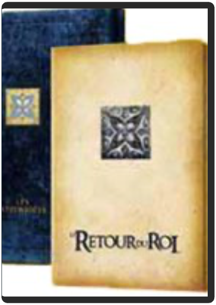

le seigneur des anneaux 1 : la communauté de l'anneau - édition spéciale, version longuepeter jackson le seigneur des anneaux 1 : la communauté de l'anneau - édition spéciale, version longuepeter jackson  Grandiose. Magnifique. Captivant. Magique. Les mots manquent pour qualifier cette brillante adaptation cinématographique d'un des plus grands romans d'héroïc fantasy. Le Seigneur des Anneaux est un film-fleuve racontant l'épopée d'un jeune hobbit détenant un anneau aux pouvoirs très puissants, convoité par Sauron, seigneur des ténèbres qui se verrait bien dominer le monde grâce à celui-ci. Cette lutte entre le bien et le mal est illustrée avec maestria par Peter Jackson, fan du roman de J.R.R. Tolkien depuis toujours. La force des émotions partagées par des personnages attachants, courageux et valeureux, et l'horreur dégagée par les ennemis destructeurs s'allient à des décors et effets spéciaux impressionnants et jamais vus au cinéma. Une telle richesse d'images demande plusieurs visions pour découvrir tous les aspects du monde enchanté de Peter Jackson. Aventure, guerre, suspense, fantastique, amour, humour. Tout est là pour faire du Seigneur des Anneaux un très grand moment de cinéma. —Marc Maesen  le seigneur des anneaux 2 : les deux tours - édition spéciale, version longuepeter jackson le seigneur des anneaux 2 : les deux tours - édition spéciale, version longuepeter jackson La communauté s'est brisée : perdus dans les collines d'Emyn Muil, Frodon et Sam, suivis par l'étrange Gollum, cherchent la Porte Noire du Mordor, tandis qu'Aragorn, Legolas et Gimli traversent la Terre du Milieu vers le Rohan, le royaume assiégé du roi Théoden. Le peuple de Théoden est en danger, et le temps presse : inspiré par Gandalf, revenu des enfers sous la forme de Gandalf le Blanc, Aragorn décide de mener les gens du Rohan vers le Gouffre d'Helm où ils seront, il en est persuadé, hors de portée des griffes de Saroumane et de sa démoniaque armée Deuxième volet de la saga épique réalisée par Peter Jackson, tirée du roman culte de J.R.R. Tolkien, Les Deux Tours nous emporte encore un peu plus loin dans un monde fantastique, un univers éblouissant foisonnant de détails, sur les pas de héros de légende aux aventures inoubliables. Libéré des obligations d'introduction à l'histoire, qui représentaient une large partie du premier épisode, Peter Jackson nous plonge d'entrée de jeu dans la course et la bataille, pour un épisode plus brutal, plus âpre et plus sombre que La Communauté de l'Anneau : chacun en aura pour son compte, et surtout les amateurs de poussées d'adrénaline. Les rebondissements sont nombreux et les scènes de combat sont titanesques à souhait avec, en point d'orgue, la grandiose bataille du gouffre d'Helm, où des dizaines de milliers d'Orques bavants et d'Uruk-Hais hurlants se lancent à l'assaut des elfes et des humains, réunis pour combattre le Mal. C'est également dans cet épisode tant attendu par les fans de la série qu'apparaît Gollum, le Hobbit corrompu par l'Anneau, entièrement conçu en images de synthèse d'après le jeu de l'acteur Andy Serkis, et dont les performances sont tout simplement extraordinaires. Cette édition 4 DVD comblera incontestablement l'appétence de tous les fans de la série. Songez : une version du film rallongée d'une demi-heure, tenant du coup désormais sur deux DVD, complétées notamment par un commentaire audio du toujours passionnant Peter Jackson. Et deux galettes intégralement consacrées aux bonus, parmi lesquels un court-métrage réalisé par l'acteur Sean Astin, et 6 heures (!) de révélations inédites sur l'histoire et les fondations de la Terre du Milieu. De quoi passer près de 10 heures au total devant votre écran pour tout connaître – ou presque – des arcanes d'une trilogie qui figure d'ores et déjà parmi les plus célèbres de l'histoire du cinéma —David Rault le seigneur des anneaux 3 : le retour du roi - édition spéciale, version longuepeter jackson Les troupes de Saroumane vaincues, celles de Sauron ont redoublé d’intensité dans leur lutte contre Gandalf et ses compagnons. Sous les ordres du courageux Aragorn, une poignée de soldats s’apprêtent à livrer une ultime bataille… Vous l’attendiez, le voilà : la luxueuse sortie DVD en version longue du multi-oscarisé Retour du Roi. Une édition spéciale contenant 50 minutes supplémentaires (dont le combat légendaire entre Gandalf et Saroumane) et une foison de bonus, ce qui ravira avant tout les millions de fans et exégètes de l’univers de Tolkien. Parmi les bonus, on retiendra quatre commentaires différents (réalisateurs et scénaristes, comédiens, équipe artistique, équipe de tournage…), plusieurs documentaires, des milliers de dessins et de photographies… un DVD monumental ! Jean-Pascal Grosso  le voyage de chihiro - édition collectorhayao miyazaki le voyage de chihiro - édition collectorhayao miyazaki Ours d’or du festival de Berlin et Oscar du meilleur film d’animation ont récompensé cette œuvre magistrale et universelle. Dans un véritable tourbillon d’idées, de couleurs et de sons, le film nous emporte avec l’héroïne à l’écart du monde, dans un établissement de bains pour les Dieux. L’occasion pour Miyazaki de créer un univers merveilleux au sens premier du terme - un assemblage chaotique de lieux et de personnages inattendus et hétérogènes (dont le très émouvant Dieu sans Visage), qui tous ensemble forment un monde cohérent et fonctionnel. Au sein de ce microcosme, Chihiro devra trouver sa place pour s’intégrer, être respectée et ainsi sauver sa vie et celle de ses parents. Tant visuellement que musicalement, Le Voyage de Chihiro est porté par la grâce et la magie d’un auteur qui ne ressemble à aucun autre. Les bonus de cette édition collector, tous de grande qualité, sont regroupés sur le deuxième disque et permettent d’en découvrir davantage sur la galaxie Miyazaki (un documentaire sur Joe Hisaishi, son compositeur attitré, un autre sur La philosophie du studio Ghibli,une visite du Musée Ghibli) et sur la conception du film (making of, comparaison film /story-board…). —www.ecranlarge.com  les affranchismartin scorsese les affranchismartin scorsese De son enfance new-yorkaise à son exil anonyme chaperonné par le FBI, le chef-d'oeuvre de Martin Scorsese sorti en 1990 retrace la vie drôle et terrifiante du gangster Henry Hill (Ray Liotta). Le style percutant de Scorcese convient à merveille pour illustrer l'irrésistible ascension de Hill dans les années 50 jusqu'à sa chute 20 ans plus tard. Personne sans doute n'avait jamais aussi bien réussi à montrer les ravages de la cocaïne sur le cerveau d'un individu. Comme souvent chez Scorsese, la bande originale revêt une grande importance. Non seulement les chansons servent à situer les scènes dans leur époque mais elles illustrent intelligemment les différents climats du film. Sans jamais lui ressembler, Les Affranchis est largement aussi réussi que Le Parrain. La composition ahurissante de Joe Pesci en mafieux complètement cinglé en a fait une star, mais chaque rôle secondaire, de Paul Sorvino à Robert De Niro, offre une performance quasiment miraculeuse. — Leonard Maltin  les aventures de tintin : le secret de la licornesteven spielberg les aventures de tintin : le secret de la licornesteven spielberg Parce qu'il achète la maquette d'un bateau appelé la Licorne, Tintin, un jeune reporter, se retrouve entraîné dans une fantastique aventure à la recherche d'un fabuleux secret. En enquêtant sur une énigme vieille de plusieurs siècles, il contrarie les plans d'Ivan Ivanovitch Sakharine, un homme diabolique convaincu que Tintin a volé un trésor en rapport avec un pirate nommé Rackham le Rouge. Avec l'aide de Milou, son fidèle petit chien blanc, du capitaine Haddock, un vieux loup de mer au mauvais caractère, et de deux policiers maladroits, Dupond et Dupont, Tintin va parcourir la moitié de la planète, et essayer de se montrer plus malin et plus rapide que ses ennemis, tous lancés dans cette course au trésor à la recherche d'une épave engloutie qui semble receler la clé d'une immense fortune... et une redoutable malédiction. De la haute mer aux sables des déserts d'Afrique, Tintin et ses amis vont affronter mille obstacles, risquer leur vie, et prouver que quand on est prêt à prendre tous les risques, rien ne peut vous arrêter... |


 Made with Delicious Library
Made with Delicious LibraryNancy, State zipflap congrotus delicious library Thomas, Julien